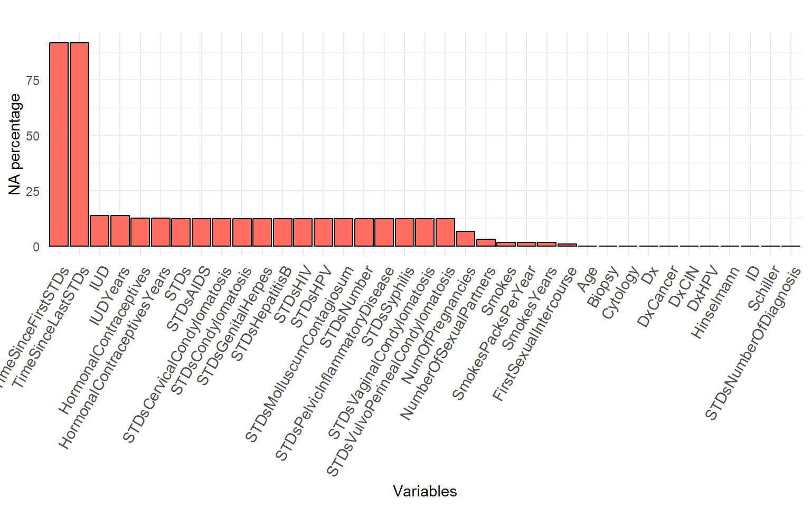
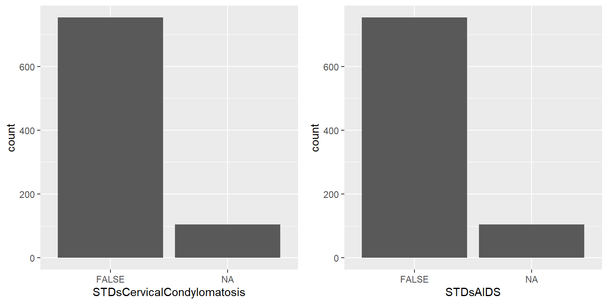

3 Preprocessing
3.1 Global overview of the initial datset
The dataset has 858 rows (observations) and 36 columns (variables), of which 24 are qualitative (categorical) and 12 are quantitative (numerical). The dataset doesn’t contain any completely empty columns. There are 3,622 missing observations across the dataset, and only 59 complete rows with no missing data. The dataset consists of a total of 30,888 individual observations (858 rows x 36 columns), and the memory allocation for this dataset is 183.9 Kb.
Table 1 : Initial dataset summary| Name | Value |
|---|---|
| Rows | 858.0 |
| Columns | 36.0 |
| Qualitative columns | 24.0 |
| Quantitative columns | 12.0 |
| All missing columns | 0.0 |
| Missing observations | 3622.0 |
| Complete Rows | 59.0 |
| Total observations | 30888.0 |
| Memory allocation (Kb) | 183.9 |
3.2 Global overview of initial variables
Table 2 : Initial variable summary| Label | Variable_Class | Unique_Values | Missing | Description |
|---|---|---|---|---|
| Age | numeric | 44 | 0 % | (int) Age (year) |
| NumberOfSexualPartners | numeric | 12 | 3.03 % | (int) Number of sexual partners |
| FirstSexualIntercourse | numeric | 21 | 0.82 % | (int) First sexual intercourse (age) |
| NumOfPregnancies | numeric | 11 | 6.53 % | (int) Num of pregnancies |
| Smokes | logical | 2 | 1.52 % | (bool) Smokes |
| SmokesYears | numeric | 30 | 1.52 % | (int) Smokes (years) |
| SmokesPacksPerYear | numeric | 62 | 1.52 % | (int) Smokes (packs/year) |
| HormonalContraceptives | logical | 2 | 12.59 % | (bool) Hormonal Contraceptives |
| HormonalContraceptivesYears | numeric | 40 | 12.59 % | (int) Hormonal Contraceptives (years) |
| IUD | logical | 2 | 13.64 % | (bool) IUD Intra Uterin Dispositif |
| IUDYears | numeric | 26 | 13.64 % | (int) IUD (years) |
| STDs | logical | 2 | 12.24 % | (bool) STDs Sexual Transmissible disease |
| STDsNumber | numeric | 5 | 12.24 % | (int) STDs (number) |
| STDsCondylomatosis | logical | 2 | 12.24 % | (bool) STDs:condylomatosis |
| STDsCervicalCondylomatosis | logical | 1 | 12.24 % | (bool) STDs:cervical condylomatosis |
| STDsVaginalCondylomatosis | logical | 2 | 12.24 % | (bool) STDs:vaginal condylomatosis |
| STDsVulvoPerinealCondylomatosis | logical | 2 | 12.24 % | (bool) STDs:vulvo-perineal condylomatosis |
| STDsSyphilis | logical | 2 | 12.24 % | (bool) STDs:syphilis |
| STDsPelvicInflammatoryDisease | logical | 2 | 12.24 % | (bool) STDs:pelvic inflammatory disease |
| STDsGenitalHerpes | logical | 2 | 12.24 % | (bool) STDs:genital herpes |
| STDsMolluscumContagiosum | logical | 2 | 12.24 % | (bool) STDs:molluscum contagiosum |
| STDsAIDS | logical | 1 | 12.24 % | (bool) STDs:AIDS (Acquired Immune Deficiency Syndrome) |
| STDsHIV | logical | 2 | 12.24 % | (bool) STDs:HIV |
| STDsHepatitisB | logical | 2 | 12.24 % | (bool) STDs:Hepatitis B |
| STDsHPV | logical | 2 | 12.24 % | (bool) STDs:HPV |
| STDsNumberOfDiagnosis | numeric | 4 | 0 % | (int) STDs: Number of diagnosis |
| TimeSinceFirstSTDs | numeric | 18 | 91.72 % | (int) STDs: Time since first diagnosis |
| TimeSinceLastSTDs | numeric | 18 | 91.72 % | (int) STDs: Time since last diagnosis |
| DxCancer | logical | 2 | 0 % | (bool) Dx:Cancer |
| DxCIN | logical | 2 | 0 % | (bool) Dx:CIN |
| DxHPV | logical | 2 | 0 % | (bool) Dx:HPV |
| Dx | logical | 2 | 0 % | (bool) Dx (diagnosis) |
| Hinselmann | logical | 2 | 0 % | (bool) Hinselmann: target variable |
| Schiller | logical | 2 | 0 % | (bool) Schiller: target variable |
| Cytology | logical | 2 | 0 % | (bool) Cytology: target variable |
| Biopsy | logical | 2 | 0 % | (bool) Biopsy: target variable |
3.3 NA Distribution
The majority of variables are less than 13% of missing values, except for two variables.
Figure 1 : Missing values distribution

Two variables TimeSinceFirstSTDs (corresponding to the time since the first STI diagnosis) and TimeSinceLastSTDs (corresponding to time since last STI diagnosis) have a rate of 91% of missing value.
Table 3 : Missing value proportion| Label | Missing | Completed |
|---|---|---|
| ID | 0 % | 100 % |
| Age | 0 % | 100 % |
| STDsNumberOfDiagnosis | 0 % | 100 % |
| DxCancer | 0 % | 100 % |
| DxCIN | 0 % | 100 % |
| DxHPV | 0 % | 100 % |
| Dx | 0 % | 100 % |
| Hinselmann | 0 % | 100 % |
| Schiller | 0 % | 100 % |
| Cytology | 0 % | 100 % |
| Biopsy | 0 % | 100 % |
| FirstSexualIntercourse | 0.82 % | 99.18 % |
| Smokes | 1.52 % | 98.48 % |
| SmokesYears | 1.52 % | 98.48 % |
| SmokesPacksPerYear | 1.52 % | 98.48 % |
| STDs | 12.24 % | 87.76 % |
| STDsNumber | 12.24 % | 87.76 % |
| STDsCondylomatosis | 12.24 % | 87.76 % |
| STDsCervicalCondylomatosis | 12.24 % | 87.76 % |
| STDsVaginalCondylomatosis | 12.24 % | 87.76 % |
| STDsVulvoPerinealCondylomatosis | 12.24 % | 87.76 % |
| STDsSyphilis | 12.24 % | 87.76 % |
| STDsPelvicInflammatoryDisease | 12.24 % | 87.76 % |
| STDsGenitalHerpes | 12.24 % | 87.76 % |
| STDsMolluscumContagiosum | 12.24 % | 87.76 % |
| STDsAIDS | 12.24 % | 87.76 % |
| STDsHIV | 12.24 % | 87.76 % |
| STDsHepatitisB | 12.24 % | 87.76 % |
| STDsHPV | 12.24 % | 87.76 % |
| HormonalContraceptives | 12.59 % | 87.41 % |
| HormonalContraceptivesYears | 12.59 % | 87.41 % |
| IUD | 13.64 % | 86.36 % |
| IUDYears | 13.64 % | 86.36 % |
| NumberOfSexualPartners | 3.03 % | 96.97 % |
| NumOfPregnancies | 6.53 % | 93.47 % |
| TimeSinceFirstSTDs | 91.72 % | 8.28 % |
| TimeSinceLastSTDs | 91.72 % | 8.28 % |
TimeSinceFirstSTDs and TimeSinceLastSTDs variables don’t bring suffisant information.
> Madley-Dowd et al. https://www.sciencedirect.com/science/article/pii/S0895435618308710
These variables are deleted.
Dataset columns is reduced from 36 to 34.
3.4 Unique value
Two columns have one single value STDsCervicalCondylomatosis and STDsAIDS.
Only fasle category for the two variables.
Figure 2 : Unique value histogram 
They don’t bring any additional information to the analysis and are therefore suppressed.
The dataframe now includes 32 variables.
3.5 Duplications
This part of this work determine if there are any redundant variables or duplicated patient in the dataframe.
3.5.1 Patient duplication
Identical results are observed for different groups of patients.
There are 20 duplicated lines groups.
Indices :
## [1] 2 441 455 467
## [1] 444 454
## [1] 594 716
## [1] 457 537
## [1] 438 443
## [1] 453 526
## [1] 390 407
## [1] 410 436 576
## [1] 401 581
## [1] 417 432
## [1] 345 357
## [1] 370 396
## [1] 347 420
## [1] 294 639
## [1] 371 531
## [1] 251 256
## [1] 221 235
## [1] 144 786
## [1] 207 487
## [1] 61 67The Data Pharmacist intervention🎯 : The limited number of variables and their quality, compared with the number of patients, complicates the prevention of random duplication. No patient is removed.
3.6 Aberant value
Figure 3: Outliers identification

Doc expertise 🎯⚕ :
After analysis, it is important to note that all observations are clinically plausible. There are no obvious anomalies or outliers that might reflect data entry error or measurement bias. Behavioral and medical history variables (such as number of pregnancies, years of smoking or years on hormonal contraceptives) are consistent with what it would be observed in the real population.
There is no medical justification for excluding observations, as none of the values are outside the ranges reasonably expected for the population studied.
Data scientist 💻📈 :
However, it is essential to take a cautious approach to analysis, particularly when it comes to extreme values. These values, while legitimate from a medical point of view, can have a disproportionate impact on certain classic statistical measures, such as the mean. These extreme observations can bias the results and give a misleading picture of the overall trend.
Preferred study markers: median, quartiles and interquartile ranges
Recommended data transformation (normalization, stadardization, etc.)
Table 4 : Original patients characteristics
| Variable | N = 8581 |
|---|---|
| Age | 25 (20, 32) |
| SmokesYears | |
| 0 to 1 | 726 (86%) |
| 1 to 5 | 51 (6.0%) |
| 10< | 38 (4.5%) |
| 5 to 10 | 30 (3.6%) |
| Unknown | 13 |
| HormonalContraceptivesYears | |
| 0 | 269 (36%) |
| 0 to 5 | 367 (49%) |
| 10< | 27 (3.6%) |
| 5 to 10 | 87 (12%) |
| Unknown | 108 |
| IUDYears | |
| 0 | 658 (89%) |
| 0 to 5 | 55 (7.4%) |
| 10< | 7 (0.9%) |
| 5 to 10 | 21 (2.8%) |
| Unknown | 117 |
| NumberOfSexualPartners | |
| 1 to 5 | 808 (97%) |
| 5 < | 24 (2.9%) |
| Unknown | 26 |
| NumOfPregnancies | |
| 0 | 16 (2.0%) |
| 1 to 5 | 758 (95%) |
| 5 < | 28 (3.5%) |
| Unknown | 56 |
| 1 Median (IQR); n (%) | |
3.7 Imputation
Each variables contain less than 13.64% missing data, so we perform multiple imputation by chain equation (MICE). The imputation is performed with the MICE package of the R software.
m = 5, seed=10, maxit = 5
Table 4 : imputed patients characteristics
| Variable | N = 8581 |
|---|---|
| Age | 27 (13 - 84), 25 (20 - 32) |
| NumOfPregnancies | 2.19 (0.00 - 11.00), 2.00 (1.00 - 3.00) |
| STDsNumber | |
| 0 | 706 (82%) |
| 1 | 40 (4.7%) |
| 2 | 50 (5.8%) |
| 3 | 53 (6.2%) |
| 4 | 9 (1.0%) |
| DxHPV | 18 (2.1%) |
| SmokesYears | |
| 0 to 1 | 739 (86%) |
| 1 to 5 | 51 (5.9%) |
| 10< | 38 (4.4%) |
| 5 to 10 | 30 (3.5%) |
| HormonalContraceptivesYears | |
| 0 | 377 (44%) |
| 0 to 5 | 367 (43%) |
| 10< | 27 (3.1%) |
| 5 to 10 | 87 (10%) |
| IUDYears | |
| 0 | 775 (90%) |
| 0 to 5 | 55 (6.4%) |
| 10< | 7 (0.8%) |
| 5 to 10 | 21 (2.4%) |
| NumberOfSexualPartners | |
| 1 to 5 | 834 (97%) |
| 5 < | 24 (2.8%) |
| 1 Mean (Range), Median (IQR); n (%) | |
3.7.2 Difference test
We use a t.test to see if there is a difference between the original variable means and the imputed variable means.

##
## T.Test Result for the mean difference between original Age and imputed Age :
##
## Welch Two Sample t-test
##
## data: column_with_NA and column_compl
## t = 0, df = 1714, p-value = 1
## alternative hypothesis: true difference in means is not equal to 0
## 95 percent confidence interval:
## -0.8047117 0.8047117
## sample estimates:
## mean of x mean of y
## 26.82051 26.82051
##
## T.Test Result for the mean difference between original NumberOfSexualPartners and imputed NumberOfSexualPartners :
##
## Welch Two Sample t-test
##
## data: column_with_NA and column_compl
## t = -0.55083, df = 1686, p-value = 0.5818
## alternative hypothesis: true difference in means is not equal to 0
## 95 percent confidence interval:
## -0.2034855 0.1142518
## sample estimates:
## mean of x mean of y
## 2.527644 2.572261
##
## T.Test Result for the mean difference between original FirstSexualIntercourse and imputed FirstSexualIntercourse :
##
## Welch Two Sample t-test
##
## data: column_with_NA and column_compl
## t = 0.12015, df = 1706.8, p-value = 0.9044
## alternative hypothesis: true difference in means is not equal to 0
## 95 percent confidence interval:
## -0.2494614 0.2820187
## sample estimates:
## mean of x mean of y
## 16.99530 16.97902
##
## T.Test Result for the mean difference between original NumOfPregnancies and imputed NumOfPregnancies :
##
## Welch Two Sample t-test
##
## data: column_with_NA and column_compl
## t = 1.1762, df = 1648.3, p-value = 0.2397
## alternative hypothesis: true difference in means is not equal to 0
## 95 percent confidence interval:
## -0.05558071 0.22208752
## sample estimates:
## mean of x mean of y
## 2.275561 2.192308
##
## T.Test Result for the mean difference between original SmokesYears and imputed SmokesYears :
##
## Welch Two Sample t-test
##
## data: column_with_NA and column_compl
## t = 0.093575, df = 1700.2, p-value = 0.9255
## alternative hypothesis: true difference in means is not equal to 0
## 95 percent confidence interval:
## -0.3688798 0.4058411
## sample estimates:
## mean of x mean of y
## 1.219721 1.201241
##
## T.Test Result for the mean difference between original SmokesPacksPerYear and imputed SmokesPacksPerYear :
##
## Welch Two Sample t-test
##
## data: column_with_NA and column_compl
## t = 0.063854, df = 1700.1, p-value = 0.9491
## alternative hypothesis: true difference in means is not equal to 0
## 95 percent confidence interval:
## -0.2040278 0.2177594
## sample estimates:
## mean of x mean of y
## 0.4531440 0.4462781
##
## T.Test Result for the mean difference between original HormonalContraceptivesYears and imputed HormonalContraceptivesYears :
##
## Welch Two Sample t-test
##
## data: column_with_NA and column_compl
## t = 1.5408, df = 1555.8, p-value = 0.1236
## alternative hypothesis: true difference in means is not equal to 0
## 95 percent confidence interval:
## -0.07754961 0.64559920
## sample estimates:
## mean of x mean of y
## 2.256419 1.972394
##
## T.Test Result for the mean difference between original IUDYears and imputed IUDYears :
##
## Welch Two Sample t-test
##
## data: column_with_NA and column_compl
## t = 0.74282, df = 1526.6, p-value = 0.4577
## alternative hypothesis: true difference in means is not equal to 0
## 95 percent confidence interval:
## -0.1151747 0.2555759
## sample estimates:
## mean of x mean of y
## 0.5148043 0.4446037
##
## T.Test Result for the mean difference between original STDsNumber and imputed STDsNumber :
##
## Welch Two Sample t-test
##
## data: column_with_NA and column_compl
## t = -5.6891, df = 1440.9, p-value = 1.544e-08
## alternative hypothesis: true difference in means is not equal to 0
## 95 percent confidence interval:
## -0.2875397 -0.1400925
## sample estimates:
## mean of x mean of y
## 0.1766268 0.3904429##
## T.Test Result for the mean difference between original STDsNumberOfDiagnosis and imputed STDsNumberOfDiagnosis :
##
## Welch Two Sample t-test
##
## data: column_with_NA and column_compl
## t = 0, df = 1714, p-value = 1
## alternative hypothesis: true difference in means is not equal to 0
## 95 percent confidence interval:
## -0.02864942 0.02864942
## sample estimates:
## mean of x mean of y
## 0.08741259 0.08741259
White, I. R., P. Royston, and A. M. Wood. 2011. “Multiple Imputation Using Chained Equations: Issues and Guidance for Practice.” Statistics in Medicine 30 (4): 377–99.
Original HormonalContraceptivesYears variable mean and the imputed HormonalContraceptivesYears variable mean are significantly different. ame for the STDsNumber
Table 5 : Patients characteristics before/after imputation
| Variable | Before Imputation | After Imputation | ||||
|---|---|---|---|---|---|---|
| DxCancerFALSE (n=840)1 | DxCancerTRUE (n=18)1 | p-value2 | DxCancerFALSE (n=840)1 | DxCancerTRUE (n=18)1 | p-value2 | |
| Age | 27 (13 - 84), 25 (20 - 32) | 33 (19 - 52), 32 (28 - 38) | <0.001 | 27 (13 - 84), 25 (20 - 32) | 33 (19 - 52), 32 (28 - 38) | <0.001 |
| SmokesYears | 1.19 (0.00 - 34.00), 0.00 (0.00 - 0.00) | 2.82 (0.00 - 37.00), 0.00 (0.00 - 0.00) | 0.9 | 1.17 (0.00 - 34.00), 0.00 (0.00 - 0.00) | 2.67 (0.00 - 37.00), 0.00 (0.00 - 0.00) | 0.8 |
| Unknown | 12 | 1 | ||||
| HormonalContraceptivesYears | 2.22 (0.00 - 30.00), 0.50 (0.00 - 3.00) | 3.57 (0.00 - 16.00), 1.00 (0.02 - 5.25) | 0.2 | 1.94 (0.00 - 30.00), 0.25 (0.00 - 2.00) | 3.57 (0.00 - 16.00), 1.00 (0.02 - 5.25) | 0.083 |
| Unknown | 108 | 0 | ||||
| IUDYears | 0.48 (0.00 - 19.00), 0.00 (0.00 - 0.00) | 1.72 (0.00 - 8.00), 0.00 (0.00 - 3.00) | 0.002 | 0.42 (0.00 - 19.00), 0.00 (0.00 - 0.00) | 1.72 (0.00 - 8.00), 0.00 (0.00 - 3.00) | <0.001 |
| Unknown | 117 | 0 | ||||
| NumberOfSexualPartners | 2.52 (1.00 - 28.00), 2.00 (2.00 - 3.00) | 2.78 (1.00 - 6.00), 3.00 (2.00 - 3.00) | 0.3 | 2.57 (1.00 - 28.00), 2.00 (2.00 - 3.00) | 2.78 (1.00 - 6.00), 3.00 (2.00 - 3.00) | 0.4 |
| Unknown | 26 | 0 | ||||
| FirstSexualIntercourse | 16.97 (10.00 - 32.00), 17.00 (15.00 - 18.00) | 18.28 (14.00 - 22.00), 18.50 (18.00 - 19.00) | 0.002 | 16.95 (10.00 - 32.00), 17.00 (15.00 - 18.00) | 18.28 (14.00 - 22.00), 18.50 (18.00 - 19.00) | 0.002 |
| Unknown | 7 | 0 | ||||
| NumOfPregnancies | 2.27 (0.00 - 11.00), 2.00 (1.00 - 3.00) | 2.61 (1.00 - 5.00), 2.00 (2.00 - 3.75) | 0.2 | 2.18 (0.00 - 11.00), 2.00 (1.00 - 3.00) | 2.61 (1.00 - 5.00), 2.00 (2.00 - 3.75) | 0.10 |
| Unknown | 56 | 0 | ||||
| STDsNumberOfDiagnosis | >0.9 | >0.9 | ||||
| 0 | 770 (92%) | 17 (94%) | 770 (92%) | 17 (94%) | ||
| 1 | 67 (8.0%) | 1 (5.6%) | 67 (8.0%) | 1 (5.6%) | ||
| 2 | 2 (0.2%) | 0 (0%) | 2 (0.2%) | 0 (0%) | ||
| 3 | 1 (0.1%) | 0 (0%) | 1 (0.1%) | 0 (0%) | ||
| 1 Mean (Range), Median (IQR); n (%) | ||||||
| 2 Wilcoxon rank sum test; Fisher’s exact test | ||||||
Table 6 : difference test before/after imputation
| Variable | Before Imputation(n=858)1 | After Imputation(n=858)1 | p-value2 |
|---|---|---|---|
| Age | 27 (13 - 84), 25 (20 - 32) | 27 (13 - 84), 25 (20 - 32) | >0.9 |
| SmokesYears | 1.22 (0.00 - 37.00), 0.00 (0.00 - 0.00) | 1.20 (0.00 - 37.00), 0.00 (0.00 - 0.00) | 0.9 |
| Unknown | 13 | 0 | |
| SmokesPacksPerYear | 0.45 (0.00 - 37.00), 0.00 (0.00 - 0.00) | 0.45 (0.00 - 37.00), 0.00 (0.00 - 0.00) | 0.9 |
| Unknown | 13 | 0 | |
| HormonalContraceptivesYears | 2.26 (0.00 - 30.00), 0.50 (0.00 - 3.00) | 1.97 (0.00 - 30.00), 0.25 (0.00 - 2.00) | 0.004 |
| Unknown | 108 | 0 | |
| IUDYears | 0.51 (0.00 - 19.00), 0.00 (0.00 - 0.00) | 0.44 (0.00 - 19.00), 0.00 (0.00 - 0.00) | 0.3 |
| Unknown | 117 | 0 | |
| NumberOfSexualPartners | 2.53 (1.00 - 28.00), 2.00 (2.00 - 3.00) | 2.57 (1.00 - 28.00), 2.00 (2.00 - 3.00) | 0.4 |
| Unknown | 26 | 0 | |
| FirstSexualIntercourse | 17.00 (10.00 - 32.00), 17.00 (15.00 - 18.00) | 16.98 (10.00 - 32.00), 17.00 (15.00 - 18.00) | 0.9 |
| Unknown | 7 | 0 | |
| NumOfPregnancies | 2.28 (0.00 - 11.00), 2.00 (1.00 - 3.00) | 2.19 (0.00 - 11.00), 2.00 (1.00 - 3.00) | 0.14 |
| Unknown | 56 | 0 | |
| STDsNumberOfDiagnosis | >0.9 | ||
| 0 | 787 (92%) | 787 (92%) | |
| 1 | 68 (7.9%) | 68 (7.9%) | |
| 2 | 2 (0.2%) | 2 (0.2%) | |
| 3 | 1 (0.1%) | 1 (0.1%) | |
| 1 Mean (Range), Median (IQR); n (%) | |||
| 2 Wilcoxon rank sum test; Fisher’s exact test | |||
Table 7 : characteristics patients
| Variable | DxCancerFALSE (n=840)1 | DxCancerTRUE (n=18)1 | p-value2 |
|---|---|---|---|
| ID | 428 (1 - 858), 427 (216 - 639) | 513 (4 - 850), 641 (226 - 773) | 0.15 |
| Age | 27 (13 - 84), 25 (20 - 32) | 33 (19 - 52), 32 (28 - 38) | <0.001 |
| NumberOfSexualPartners | 2.57 (1.00 - 28.00), 2.00 (2.00 - 3.00) | 2.78 (1.00 - 6.00), 3.00 (2.00 - 3.00) | 0.4 |
| FirstSexualIntercourse | 16.95 (10.00 - 32.00), 17.00 (15.00 - 18.00) | 18.28 (14.00 - 22.00), 18.50 (18.00 - 19.00) | 0.002 |
| NumOfPregnancies | 2.18 (0.00 - 11.00), 2.00 (1.00 - 3.00) | 2.61 (1.00 - 5.00), 2.00 (2.00 - 3.75) | 0.10 |
| Smokes | 124 (15%) | 3 (17%) | 0.7 |
| SmokesYears | 1.17 (0.00 - 34.00), 0.00 (0.00 - 0.00) | 2.67 (0.00 - 37.00), 0.00 (0.00 - 0.00) | 0.8 |
| SmokesPacksPerYear | 0.41 (0.00 - 22.00), 0.00 (0.00 - 0.00) | 2.06 (0.00 - 37.00), 0.00 (0.00 - 0.00) | 0.7 |
| HormonalContraceptives | 473 (56%) | 13 (72%) | 0.2 |
| HormonalContraceptivesYears | 1.94 (0.00 - 30.00), 0.25 (0.00 - 2.00) | 3.57 (0.00 - 16.00), 1.00 (0.02 - 5.25) | 0.083 |
| IUD | 182 (22%) | 6 (33%) | 0.3 |
| IUDYears | 0.42 (0.00 - 19.00), 0.00 (0.00 - 0.00) | 1.72 (0.00 - 8.00), 0.00 (0.00 - 3.00) | <0.001 |
| STDs | 181 (22%) | 2 (11%) | 0.4 |
| STDsNumber | 0.4 | ||
| 0 | 690 (82%) | 16 (89%) | |
| 1 | 38 (4.5%) | 2 (11%) | |
| 2 | 50 (6.0%) | 0 (0%) | |
| 3 | 53 (6.3%) | 0 (0%) | |
| 4 | 9 (1.1%) | 0 (0%) | |
| STDsCondylomatosis | 149 (18%) | 0 (0%) | 0.055 |
| STDsVaginalCondylomatosis | 109 (13%) | 0 (0%) | 0.2 |
| STDsVulvoPerinealCondylomatosis | 148 (18%) | 0 (0%) | 0.055 |
| STDsSyphilis | 123 (15%) | 0 (0%) | 0.093 |
| STDsPelvicInflammatoryDisease | 106 (13%) | 0 (0%) | 0.2 |
| STDsGenitalHerpes | 105 (13%) | 0 (0%) | 0.2 |
| STDsMolluscumContagiosum | 105 (13%) | 0 (0%) | 0.2 |
| STDsHIV | 123 (15%) | 0 (0%) | 0.093 |
| STDsHepatitisB | 105 (13%) | 0 (0%) | 0.2 |
| STDsHPV | 105 (13%) | 2 (11%) | >0.9 |
| STDsNumberOfDiagnosis | >0.9 | ||
| 0 | 770 (92%) | 17 (94%) | |
| 1 | 67 (8.0%) | 1 (5.6%) | |
| 2 | 2 (0.2%) | 0 (0%) | |
| 3 | 1 (0.1%) | 0 (0%) | |
| DxCIN | 9 (1.1%) | 0 (0%) | >0.9 |
| DxHPV | 2 (0.2%) | 16 (89%) | <0.001 |
| Dx | 10 (1.2%) | 14 (78%) | <0.001 |
| Hinselmann | 31 (3.7%) | 4 (22%) | 0.005 |
| Schiller | 67 (8.0%) | 7 (39%) | <0.001 |
| Cytology | 40 (4.8%) | 4 (22%) | 0.011 |
| Biopsy | 49 (5.8%) | 6 (33%) | <0.001 |
| 1 Mean (Range), Median (IQR); n (%) | |||
| 2 Wilcoxon rank sum test; Fisher’s exact test; Pearson’s Chi-squared test | |||